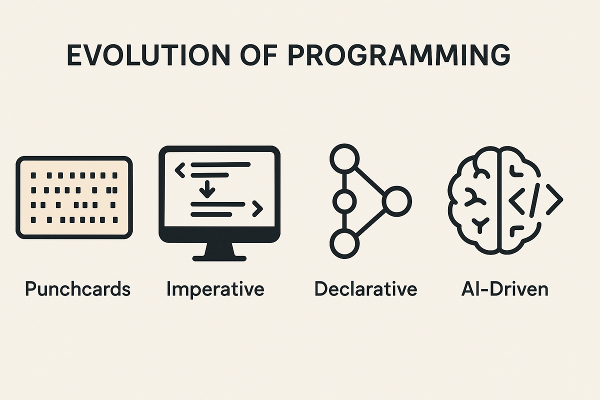
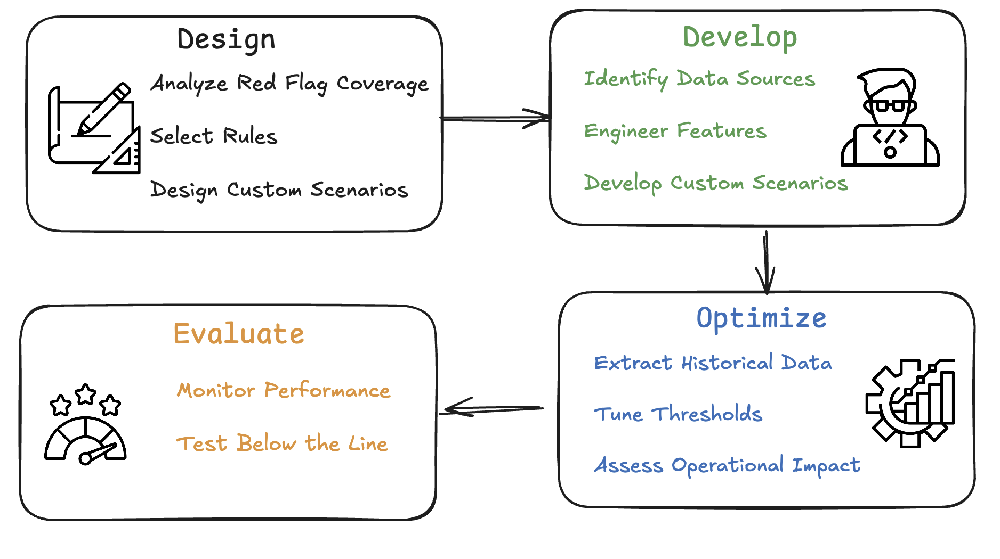
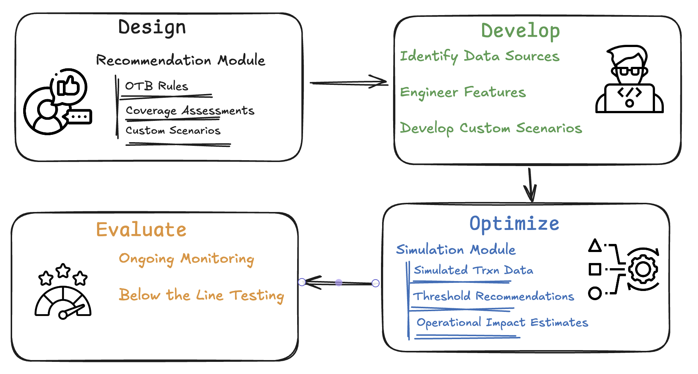
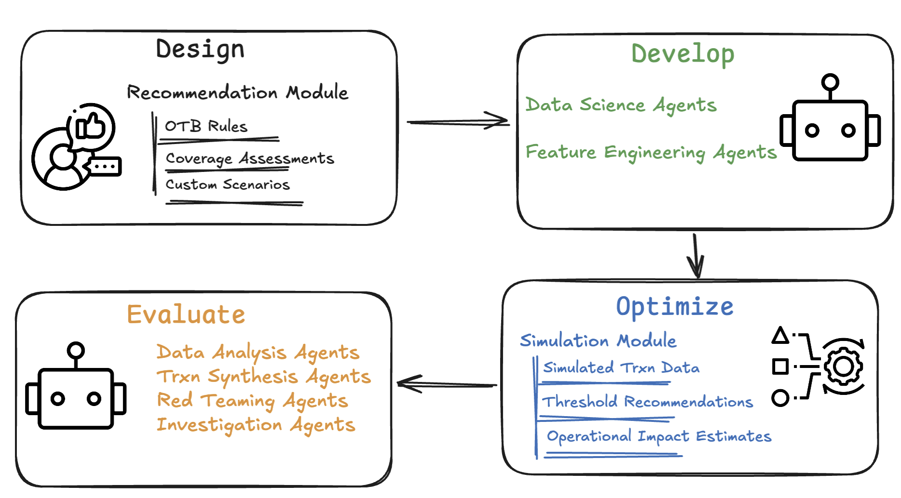

The Evolution of Computer Programming
The evolution of computer programming has been remarkable. Over the past 70 years, we have progressed from using punch cards—accessible to only a select few—to AI-powered coding agents capable of deploying entire applications from natural language instructions.

The first major shift was the transition from punch cards to imperative programming, which included low-level languages like Assembly and higher-level languages such as FORTRAN and ALGOL.
In imperative programming, a user explicitly defines the steps needed to achieve a desired result. For example, to sum numbers in a list:
numbers = [1, 2, 3, 4, 5]
total = 0
for num in numbers:
total += num
print(total)This program accomplishes the task by changing the state of a local variable, total, through iteration.
The next shift came with declarative programming, where the focus shifts from how to achieve a result to what the result should be. Control flow and state changes are abstracted away.
numbers = [1, 2, 3, 4, 5]
total = sum(numbers)
print(total)Declarative programming became practical only with advances in hardware and programming theory, which allowed for higher levels of abstraction and compiler-driven optimization.
Today, the landscape has been transformed again by AI and large language models (LLMs). These coding agents now empower even non-developers to build and deploy production-ready applications.
The Evolution of Transaction Monitoring
Before automated systems, financial institutions relied on manual reviews of customer activity and account statements—often triggered by red flags or external investigations. This labor-intensive process laid the groundwork for what would eventually evolve into formalized transaction monitoring.
This manual process resembled the punch card era of programming: highly specialized, low-volume, and slow.
The Imperative Approach to Transaction Monitoring
With the advent of computers, automation became possible. AML monitoring systems began analyzing transactions using pre-defined rules or heuristics.
Configuring and operating these Transaction Monitoring Systems typically involve four steps as shown in the figure below.

Financial institutions care about monitoring risks specific to them. To do this, they must go through several steps: selecting relevant rules from a vendor’s library, mapping those rules against known risks to identify coverage gaps, developing custom rules to address uncovered risks, tuning thresholds to balance sensitivity and false positives, and finally, evaluating the performance of the implemented solutions.
Most “imperative” AML transaction monitoring systems give financial institutions a set of low-level tools they must use to carry out these steps.
Example: Suppose an FI wants to mitigate human smuggling risks identified in a FinCEN advisory. Red Flag 3, which involves rapid flow-through of funds, could be captured by an existing model. Similarly, Red Flags 6 and 7, which pertain to large cash deposits, might also be addressed through out-of-the-box models. However, Red Flag 1, which requires monitoring transactions originating from specific geographies, may necessitate the development of a custom rule. This would involve identifying new data sources and coordinating efforts among data scientists, analysts, and IT professionals to implement the necessary logic.
The Declarative Approach to Transaction Monitoring
A declarative system allows users to identify what risks they want to monitor, while the system decides how to monitor them—just like declarative programming offloads execution planning to compilers.
This also marks a shift from handcrafted rules to ML models that learn from data.
Continuing the earlier example: given eight red flags, a declarative system could recommend the best-fitting out-of-the-box rules, propose thresholds using lightweight, data-efficient techniques, suggest suitable features from the FI’s feature store, and recommend logic to combine features into custom rules or train ML models.
In the declarative approach, users should be able to specify:
monitor([red_flag1, red_flag2, ...])
The system would then internally do the following:
for red_flag in red_flags:
if red_flag in library:
recommend(rule)
else:
recommend(custom_scenario)
recommend(threshold)This system returns the optimal rule to monitor each red flag. If there is any residual risk the system should also recommend a custom rule and thresholds for each of these rules.This abstracts much of the manual effort in rule selection, customization, and optimization.
The declarative approach streamlines the Design and Optimize stages, though users still need to operationalize feature engineering and scenario development across multiple data sources

The AI-Native Approach to Transaction Monitoring
The next leap is the AI-native system—where AML transaction monitoring can be designed, deployed, and evaluated with minimal human effort and a few high-level inputs. This is enabled by a fleet of intelligent agents.
Development through Agents:
Feature Engineering Agents can discover relevant features or derive new ones from internal data sources. Model Training Agents can select optimal features, generate rules, train models, and recommend thresholds. Transaction Synthesis Agents can simulate activity matching red flags for rapid prototyping and performance testing; they can also extract transactions from historical SARs. Red Teaming Agents can stress test systems using synthetic patterns to uncover blind spots. Investigation Agents can review flagged transactions and enable faster design-evaluate iterations. Data Analysis Agents can manage model performance monitoring,Below The Line testing, and documentation.
Together, these agents automate and accelerate the Develop and Evaluate phases of the life cycle.

Conclusion
AI’s impact on transaction monitoring may prove as transformative as its impact on software development. It has the potential to simplify and speed up every stage of the AML Transaction Monitoring lifecycle.
However, as institutions adopt these technologies, they must be cautious. Automated systems may not always capture institution specific nuances, making human oversight critical—especially in high-stakes compliance environments.
The true winners in this AI era will not be those who merely retrofit AI into existing workflows, but those who rethink and redesign transaction monitoring from the ground up.